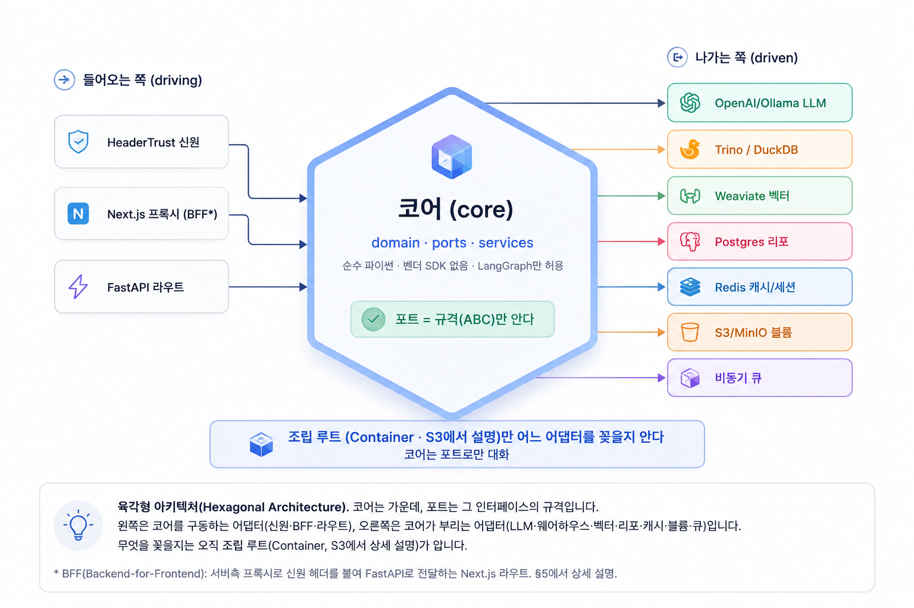

이 플랫폼은 Next.js 프런트엔드와 FastAPI 백엔드로 이루어지고, 브라우저 요청은 Next.js 프록시를 거쳐 FastAPI로 전달됩니다. 백엔드는 육각형(포트&어댑터) 아키텍처를 따릅니다. 핵심 규칙은 단순합니다 — 코어는 순수하고, 기술은 어댑터에 가둡니다. 빠른 응답은 비동기로 흘리고, 무거운 계산은 Celery 워커(비동기 작업 큐 프레임워크 — 브로커·워커·Beat 스케줄러로 구성, §6 참고)로 밀어냅니다. 이 문서는 코어 구조(§1-3) → 인프라(§4) → 요청 흐름(§5) → 실행 모델(§6) → 설정(§7) 순으로 아키텍처를 쌓아 설명합니다.
💡 점선 밑줄 용어에 마우스를 올리면 설명이 나옵니다. 파일:줄 표기는 실제 코드 위치입니다.
코어를 노트북 본체라고 생각하세요. 본체는 USB-C 단자(=포트)의 모양만 압니다. 그 단자에 충전기를 꽂든 모니터를 꽂든(=어댑터) 본체 회로는 바뀌지 않습니다. 여기서도 코어는 "LLM은 이런 함수를 가진다"는 규격만 알고, 실제로 OpenAI든 Ollama든 꽂는 일은 어댑터가 합니다.
백엔드의 핵심 설계 원칙은 육각형(포트&어댑터) 아키텍처입니다. 코어(api/app/core/)는 순수 파이썬만 사용하며 벤더 SDK를 모릅니다. 모든 외부 기술(LLM, 웨어하우스, 벡터 DB 등)은 ABC 포트를 통해서만 코어와 대화하고, 실제 구현은 어댑터가 맡습니다. 이 경계가 어떻게 강제되는지는 아래에서 설명합니다.
이 구조 위에서 LangGraph 기반 에이전트가 동작하며, 포트를 통해 LLM·쿼리엔진 등을 호출합니다 (상세: §2 및 에이전트 아키텍처 문서).
참고로 브라우저는 FastAPI를 직접 부르지 않습니다. Next.js 서버가 BFF(Backend-for-Frontend) 프록시 역할을 맡아 신원 헤더를 붙여 FastAPI로 전달합니다. 자세한 흐름은 §5에서 다룹니다.
코어(api/app/core/)는 세 겹입니다: domain(순수 데이터) · ports(ABC 인터페이스) · services(포트만 써서 오케스트레이션). 이 경계는 import-linter(파이썬 import 경계 검사 도구) 계약으로 강제됩니다.
| 겹 | 무엇 | 규칙 |
|---|---|---|
| domain |
domain.py — Principal(사용자 신원 토큰 — user_id·department·email·is_admin·roles를 담는 dataclass. 모든 접근 스코프의 뿌리 (상세 §5)),
Artifact, LibraryArtifact,
GraphSpec, WorkflowGraph, WorkflowRun 등 순수 dataclass/enum.
GraphSpec — CTE DAG 컴파일 입력; WorkflowGraph — 워크플로우 아티팩트의 노드 DAG(쿼리·Python·대시보드·리포트 스텝을 엣지로 연결한 순수 dataclass → 에이전트 아키텍처 문서).
|
벤더 타입이 절대 등장하지 않음. |
| ports | core/ports/*.py — 모든 바깥 기술의 ABC. | 구현이 아니라 규격만. |
| services | 오케스트레이션 로직. | 포트만 호출 · 어댑터를 모름. |
이 세 겹의 경계는 코드 레벨에서 다음과 같이 강제됩니다.
api/app/.importlinter가 두 계약을 강제합니다.
① core-is-pure: app.core는
app.adapters·app.config·app.main을 import할 수 없음. 모든
포트는 생성자 주입으로 받음. ② sdks-confined-to-adapters:
app.core는 openai·trino·weaviate·sqlalchemy·redis·rq·boto3·duckdb·docker·jose를
import할 수 없음. 단 LangGraph는 일부러 제외 — 위에서 소개한 대로 에이전트 그래프에서
코어의 1급 의존성으로 직접 씁니다.

어느 어댑터를 어느 포트에 연결할지 결정하는 역할은 조립 루트(Container)가 담당하며, §3에서 상세히 다룹니다. 이렇게 코어가 포트라는 경계로 기술과 대화하는 구조를 확인했습니다. §2에서는 각 포트가 어떤 기술 경계를 정의하는지 구체적으로 살펴봅니다.
코어가 외부 기술과 교류하는 모든 지점은 ABC 포트로 정의됩니다 (core/ports/). 아래 포트들이 각 기술 경계를 명시합니다.
| 포트 | 역할 |
|---|---|
LLMClient llm.py:8 | 비동기 chat()·stream(). OpenAI 호환 dict만 오가고 SDK 타입은 경계를 넘지 않음. |
QueryEngine query.py:14 | 읽기 전용 웨어하우스: list_catalogs·get_schema·run_query·explain·distinct_values. DDL 거부·행 제한. |
VectorStore vector.py:9 | upsert·search·hybrid_search(dense+BM25)·delete. 부서 스코프. |
BlobStore blob.py:6 | put·get·presign_get·list_keys. |
TaskQueue queue.py:7 | enqueue(job,payload)→job_id, status(job_id)→{state, result?, error?}. |
SessionStore·Cache·PubSub cache.py:10/43/64 | 세션(슬라이딩 TTL+절대 마감) · KV 캐시 · 팬아웃 pub/sub. |
Profiler profiler.py:18 | 자동 EDA: profile(bytes)→ProfileReport(HTML+summary+structured); read_columns. |
IdentityProvider identity.py:13 | 게이트웨이 헤더 → Principal. |
CodeRunner sandbox.py:16 | LLM 생성 파이썬 격리 실행: CPU/메모리/시간 제한, 실행 후 파기. |
SemanticLayer semantic.py:28 | 결정론적 MetricRequest→SQL 컴파일(LLM 아님). 범위 밖이면 LLM 생성 경로로 폴백. |
PiiDetector pii.py:42 | classify_column→PiiVerdict(safe/pii/uncertain). 엔티티-값 색인 전 컬럼 선별. |
추가 포트는 core/ports/ docstring 참고 (SQL 분석 · 커넥터 · 리포 계열 포함).
| 포트 | 어댑터 후보 |
|---|---|
LLMClient | OpenAICompatibleLLM · OllamaCloudLLM · MasterRouter(provider:model 접두로 분기) |
QueryEngine | TrinoQueryEngine · DuckDBQueryEngine(derived/{dept}/*.parquet 읽음) |
VectorStore | WeaviateVectorStore (v4 SDK는 동기 → asyncio.to_thread로 감쌈) |
TaskQueue | CeleryTaskQueue · rq_queue.py · inline_queue.py(테스트) |
IdentityProvider | HeaderTrustIdentity · jwt_identity.py — hmac.compare_digest로 x-gateway-secret 검증 후 헤더에서 Principal 추출. (검증 전체 흐름은 §5 참고) |
BlobStore | S3BlobStore · LocalBlobStore |
| Postgres 리포 묶음 | adapters/repo/*.py — 하나의 SQLAlchemy async_sessionmaker를 공유 |
| Redis 세트 | cache/redis_store.py — Session·Cache·PubSub가 하나의 Redis 클라이언트 공유 |
어느 어댑터를 어느 포트에 꽂는지를 결정하는 것이 다음 §3의 조립 루트(Container)입니다.
api/app/config/factory.py의
Container(line 387)는 유일하게 "어느 어댑터가 어느 포트인지"
아는 곳입니다. @lru_cache get_container()(line 701)로 프로세스당
하나만 만들어지며, FastAPI 핸들러에는 Depends(container)(api/app/api/deps.py:10)로 주입됩니다.
모든 포트를 공개 속성으로 들고 있으며
Settings의 어댑터 선택자 필드(llm_adapter, query_adapter, vector_adapter, blob_adapter, queue_adapter, identity_adapter)에 따라 지연 생성합니다(값 전체는 §7 참고).
벤더 SDK는 해당 분기 안에서만 import해, 안 쓰는 SDK는 설치조차 필요
없습니다.
@_cached_service(line 369)가 각 서비스를
Container당 한 번만 만들어 재사용 — 한 요청에서 같은 서비스를 수십 번 불러도
중복 할당이 없습니다.
sql_engine(url)은 DSN당 AsyncEngine 하나,
redis(url, decode_responses)는 (url, decode_responses) 쌍당 클라이언트 하나를
공유합니다. @lru_cache get_resources()(line 107)가 싱글턴이라
테스트와 팩토리가 같은 풀을 씁니다.
Container.aclose()(config/factory.py:456-466)가 체크포인터 풀,
ES httpx 클라이언트, resources.close_all()(모든 엔진 dispose +
Redis 종료)를 정리합니다. FastAPI lifespan finally에서 호출
(main.py:40).
이제 Container가 연결하는 외부 시스템 여섯 가지를 §4에서 살펴봅니다.
§3에서 Container가 어댑터를 포트에 주입하는 방식을 확인했습니다. 이제 어댑터가 실제로 연결하는 외부 시스템 여섯 가지를 정의합니다. 각각은 어댑터를 통해서만 코어와 대화합니다.
| 구성요소 | 역할 |
|---|---|
| PostgreSQL |
원본 기록:
스레드·메시지·아티팩트·대시보드·코퍼스·시맨틱 모델·워크플로우 실행 등. Celery 결과 백엔드(db+postgresql://) 및 LangGraph 체크포인터(AsyncPostgresSaver) 역할도 겸함 — 상세 §6.
|
| Weaviate | 벡터 검색, 4개 컬렉션: schema_catalog · query_corpus · semantic_catalog · entity_values. 서버측 text2vec-transformers로 임베딩. |
| DuckDB | 업로드 데이터용 인프로세스·일시적 QueryEngine — derived/{dept}/*.parquet를 매번 새 :memory: 연결로 읽음(공유 상태 없음). 확장 자동로드·자동설치 비활성(SSRF 방어). |
| Redis | 세션 스토어(슬라이딩 TTL+절대 마감) + KV 캐시 + pub/sub + Celery 비동기 작업 브로커. 세 캐시 포트가 클라이언트 하나를 공유. |
| Trino | 주 분석 웨어하우스 페더레이션. 카탈로그 위 SQL, 부서 격리(user=principal.user_id), 60s/1GB 세션 제한. |
| S3/MinIO | 블롭: 업로드·EDA HTML·파생 parquet·생성 아티팩트. s3_bucket=analytics-artifacts. |
여섯 기둥의 역할을 확인했으니, §5에서는 브라우저 요청이 Principal로 변환되는 4단계 흐름을 먼저 살펴봅니다.
브라우저는 FastAPI를 직접 부르지 않습니다. web/src/app/api/의 Next.js 라우트가 BFF(Backend-for-Frontend) 프록시로 서서, 서버측에서 신원 헤더를 붙여 FastAPI로 전달합니다 (_proxy.ts).
프로덕션에서는 외부 API 게이트웨이(예: AWS API GW, Kong)가 Next.js 앞에 서서 사용자 신원 헤더(X-User-Id 등)를 주입합니다.
개발 환경에서는 이 게이트웨이 없이 BFF가 직접 헤더를 붙입니다.
X-User-Id, X-Department, X-User-Email)를 주입합니다.
개발 환경에서는 이 단계가 생략되고 BFF가 직접 헤더를 붙입니다.
X-Gateway-Secret을 붙입니다. 세션 쿠키
aa_session이 있으면 그대로 전달. 게이트웨이 신원 헤더
(X-User-Id·X-Department·X-User-Email)는 인바운드 요청이
맞는 x-gateway-secret을 지녔을 때만 전달 — 브라우저가 위조할 수 없게.
세션이 없고 prod가 아닐 경우 DEV_USER_ID 등 환경 변수 폴백을 사용합니다(환경 변수 구성은 §7 참고).
용도별 다섯 가지 헬퍼: proxyGet(25s), proxyJson(에이전트 루프용 LLM_TIMEOUT_MS=120000), proxyAuth(Set-Cookie 전달), proxyForm(멀티파트), proxyDelete. 스트리밍 /chat/ask는 자체 핸들러로 흘립니다.
IdentityProvider.resolve()를 호출합니다.
실제 시크릿 검증(hmac.compare_digest)은 HeaderTrustIdentity 어댑터
(header_trust.py) 구현체에서 x-gateway-secret
헤더에 대해 수행합니다.
Principal(user_id·department·email|None·is_admin·roles[]).
모든 데이터 접근은 department로 스코프됩니다 — 부서 간
격리의 뿌리입니다.
브라우저 요청이 Principal로 변환되는 4단계 흐름을 확인했으니, §6에서는 그 요청이 어떤 실행 경로를 타는지 살펴봅니다.
모든 FastAPI 핸들러는 async def입니다. 문제는 —
Weaviate v4 SDK, DuckDB, Trino 클라이언트, Celery 결과 백엔드처럼
블로킹 I/O가 있다는 점. 이들은 전부
asyncio.to_thread로 감싸 이벤트 루프를 막지 않습니다.
진짜 무거운 계산(EDA 프로파일링(eda_report), 문서 인덱싱(index_documents), 파일 수집(ingest_file) 등)은 요청 안에서 하지 않고
Celery 워커로 밀어냅니다. 에이전트 그래프 실행(run_workflow)도 Celery 워커로 오프로드되며, LangGraph 체크포인터(그래프 상태를 단계마다 Postgres에 저장해 재개·디버깅을 지원)가 그 안에서 돌아갑니다. Celery Beat는 cron처럼 60초마다
scheduler_tick 잡을 자동 투입하는 세 번째 실행 경로입니다.
등록된 잡 전체: eda_report·eda_analyze·data_analyze·ingest_file·index_documents·ingest_corpus·sync_schema·run_workflow·scheduler_tick
(jobs/registry.py). Celery 태스크는 동기 module.run(payload)를 직접 호출하고
(jobs/celery_app.py:89), 각 모듈의 run()이 내부에서 asyncio.run(run_async(payload))로 비동기 본체를 돌립니다.
to_thread로 감싸 곧장 응답합니다. ② 무거운 작업은
enqueue → Redis 브로커 → Celery 워커 → 결과 Postgres로 흐르고,
클라이언트는 status(job_id)를 폴링합니다. ③ Celery Beat는 cron처럼
60초마다 scheduler_tick 잡을 Redis 브로커에 직접 투입하는 세 번째 경로입니다.
같은 Postgres가 원본 기록(SQLAlchemy 풀), Celery 결과 백엔드(db+postgresql://),
LangGraph 체크포인트(AsyncPostgresSaver, 별도 psycopg3 풀, 자체 관리 테이블)라는 세 역할을
겸합니다. 물리적으로 한 DB, 논리적으로 분리된 세 쓰임입니다.
이 신원 검증과 실행 경로에서 사용하는 설정 값들을 §7에서 정리합니다.
api/app/config/settings.py Settings는
.env + .env.secrets를 읽고(실제 프로세스 env가
최우선), app_env="dev" 기본값을 둡니다. 어댑터 선택은
아래 문자열 필드로 합니다.
| 필드 | 설명 | 허용 값(예) |
|---|---|---|
llm_adapter | LLM 클라이언트 | openai_compatible · ollama · router |
query_adapter | 쿼리 엔진 | trino · duckdb |
vector_adapter | 벡터 스토어 | weaviate |
blob_adapter | 블롭 스토어 | s3 · local |
queue_adapter | 태스크 큐 | celery · rq · inline |
identity_adapter | 신원 공급자 | header_trust · jwt |
_enforce_prod_secrets 검증기(settings.py:276-309)는 prod류 환경에서 다음 세 조건 중 하나라도 해당하면 기동을 실패시킵니다:
① gateway_trust_secret이 ""·"change-me"·"dev-gateway-secret" 중 하나,
② secrets_key가 빈 값,
③ 평문 전송 — 브로커 REDIS_URL이 rediss://가 아니거나 DATABASE_URL에 sslmode=require(또는 verify-ca/verify-full)가 없는 경우.
서비스 메시처럼 앱 레벨 TLS가 불필요하면 INSECURE_TRANSPORT_OK=true로 ③을 비활성화합니다.
_resolve_cookie_secure는 prod에서 쿠키를 자동으로 secure로
만듭니다. 파이썬 코드에는 APP_ENV로 파일을 바꾸는 분기가 없습니다 —
app_env는 파일 선택이 아니라 동작 검증기를 제어합니다.
실제 운영에서 참고할 Celery 설정 (jobs/celery_app.py):
task_track_started=True·task_acks_late=True·task_reject_on_worker_lost=True(워커 프로세스 예기치 않은 종료 시 재큐잉),
soft 600s / hard 660s, 결과 7일 보관.
프리포크 자식 재사용으로 EDA/프로파일링 후 메모리 회수: worker_max_tasks_per_child=20 · worker_max_memory_per_child=512000KB(~500MB, 둘 다 Settings로 조정).
k8s pod에서는 CELERY_CONCURRENCY env로 prefork 동시성을 고정하세요 — 미설정 시 Celery가 노드 전체 CPU 수를 쓰다 OOM될 수 있습니다 (worker/entrypoint.sh:34).
잡 목록은 §6 참고.
이 문서에서 다루지 않은 에이전트 오케스트레이션(마스터 라우터·전문가·plan/execute 루프·도구)은 docs/agent-architecture.html(에이전트 아키텍처 문서, 예정)을 참고하세요.